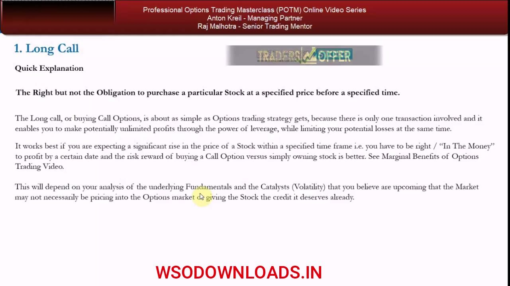
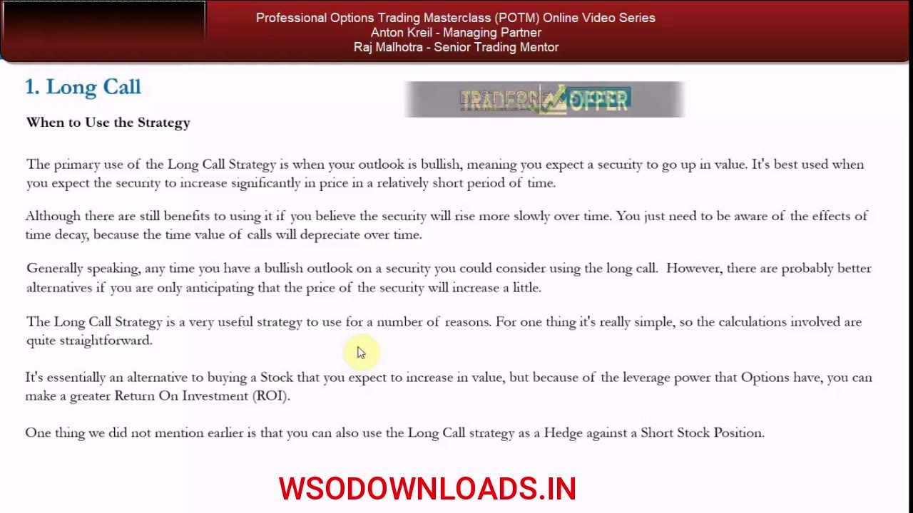
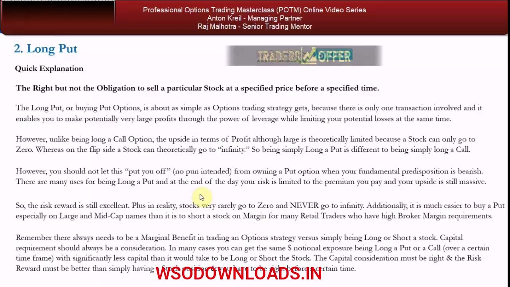
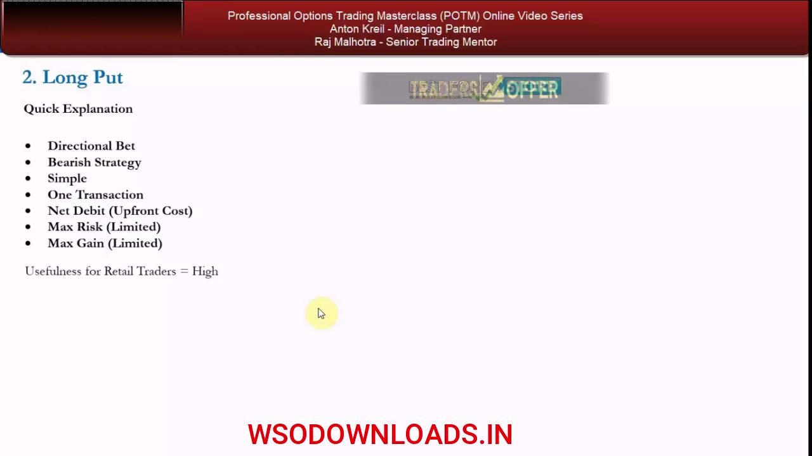

Long Call & Put Options Formalized
The two simplest directional strategies, laid out with a repeatable skeleton: attributes, hockey-stick payoff, exact break-even / profit / max-loss formulas, worked examples, and their hedging uses.
Video 6 stops improvising and formalizes the long call and long put using the same fixed template you'll reuse for every strategy in the series. Each gets a definition, its attributes, three core calculations, a $50 worked example, and its real hedging jobs — so you can always come back and re-derive break-even, max upside, and max downside for the rest of your life.
The gist
- A LONG CALL is the right but not the obligation to PURCHASE a stock at the strike price before expiry. Attributes: Directional · Bullish · Simple · 1 transaction · Net Debit · Max Risk Limited (premium) · Max Gain UNLIMITED · Usefulness High.
- Long-call formulas: Break-even = strike + premium; profit per contract = underlying − (strike + premium); max loss = premium (lost when underlying ≤ strike).
- Long-call worked example: Company X at $50, ATM $50 call at $2 = $200 (×100 multiplier). At $52 you break even; at $55 the contract is ~$500 for a ~$300 profit; if the stock falls the call expires worthless and you lose the $200.
- Apply the 1:3 rule: to justify the call over owning stock, your realistic price target must be at least 3× the premium above break-even — i.e. prefer a target of $56+ here; if you only expect $55, own the stock instead.
- A LONG PUT is the right but not the obligation to SELL a stock at the strike before expiry. Attributes: Directional · Bearish · Simple · 1 transaction · Net Debit · Max Risk Limited (premium) · Max Gain LIMITED (a stock can only go to zero) · Usefulness High.
- Long-put formulas: Break-even = strike − premium; profit per contract = strike − underlying − premium; max loss = premium (lost when underlying ≥ strike).
- Long-put worked example (mirror): $50 put at $2 = $200. At $48 you break even; at $45 the put is ~$500 for a ~$300 profit; if the stock is ≥$50 at expiry you lose the $200. Preferable minimum target here is $44.
- The asymmetry: the call's max gain is UNLIMITED while the put's is LIMITED (floored by a zero stock price) — yet BOTH keep Usefulness = High, because a big down-move pays as much in dollars as a big up-move.
- Hedging: a PROTECTIVE PUT insures a long stock position across a catalyst date (e.g. earnings, expiry after the report); a long-dated 5–15% OTM put (3/6/9/12 months, ~1.5–2.5% of performance) is the 'burn-the-house-down' black-swan hedge; and a 5% OTM 2–4 week LONG CALL is a cheap hedge against a short-squeeze on a short stock position.
Why formalize: one skeleton for every strategy
- Videos 3–5 used real long-call and long-put examples to build a basic feel; video 6 now FORMALIZES them.
- The formalization skeleton is fixed and reused for every strategy in the POTM series: quick explanation → attributes → when to use → how to use → break-even / profit / risk calculations → worked example.
- The long call and long put are the first two strategies defined as 'useful' in the Useful PDF (download section).
This lesson isn't new material — it's structure. Anton pins the long call and long put onto a repeatable template so you can always come back and re-derive each strategy's mechanics for the rest of your life.
The Long Call, defined
- A long call gives you the RIGHT but not the OBLIGATION to purchase a particular stock at a specified strike price before a specified expiration date.
- It's about as simple as an options strategy gets: only one transaction, potentially UNLIMITED profit through leverage, while your loss is limited.
- It works best when you expect a SIGNIFICANT rise within the time frame — you have to be right ('in the money') and profit by a certain date, and the risk-reward must beat simply owning the stock.
- Whether you buy the call over the stock depends on your read of fundamentals and catalysts (volatility) the market may not yet be pricing in.
The call is a leveraged, capped-risk way to be bullish. Its edge over owning the stock only exists when your fundamental/catalyst view isn't already reflected in the option price.
Long Call attributes
- Directional Bet · Bullish · Simple · One Transaction · Net Debit (upfront cost).
- Max Risk = Limited (the premium you pay).
- Max Gain = UNLIMITED.
- Usefulness for retail traders = High — top of the Useful PDF alongside long puts.
These bullet attributes are the compact fingerprint of the strategy. The standout is the unlimited upside paired with premium-capped downside — the core appeal of buying calls.

When to use the Long Call
- Primary use: a bullish outlook where you expect the security to rise SIGNIFICANTLY in a relatively short period.
- It still works for a slow rise, but beware time decay — the time value of the call depreciates over time.
- If you only anticipate a small increase, there are probably better alternatives (covered later in the series).
- It's essentially a leveraged alternative to buying the stock — higher potential ROI — and can also HEDGE a short stock position.
Reach for the long call when you expect a big, timely move. Small, slow moves get eaten by time decay and are better expressed another way.

How to use it: strike, expiry, and the 1:3 discipline
- Downside is capped at the premium no matter how far the stock falls; you tune risk-reward by choosing the strike.
- The 1:3 rule: your price target must give at least a 3× payoff versus the premium — buy a $1 call only if you realistically forecast the stock rising at least $3 above break-even.
- Match expiry to the catalyst: short-dated for a quick catalyst, longer-dated (more expensive, more time premium) for a slower move.
- The discipline forces you to document the fundamentals, catalysts, and time horizon before committing capital.
The 1:3 payoff rule is the guardrail. It converts a vague bullish hunch into a documented thesis with a specific target, time frame, and reward-to-cost ratio.
Moneyness, time decay, and delta (deferred)
- Beginners should start AT the money or very near the money to learn how owning a call compares to owning the stock.
- OTM contracts are cheaper but have a LOWER probability of finishing in the money — a top reason retail traders lose (chasing cheap leverage 5/10/15% OTM that never finishes ITM: 'it's death').
- Time value decays and the decay ACCELERATES into expiry.
- Experienced traders compare DELTA values across strikes to pick the strike — but delta is deferred to a later lesson (with Raj Malhotra); don't worry about it yet.
Cheap isn't good. The probability of finishing in the money is baked into the price, and beginners should pay for that probability by staying near the money rather than buying lottery-ticket OTM calls.
Long Call — the three calculations
- Break-even = strike price + price of the option (underlying = strike + premium).
- Profit is made when underlying > strike + premium; profit per contract = underlying − (strike + premium).
- Maximum loss = the premium paid (net debit), incurred when underlying ≤ strike price.
- Every strategy in the series gets these same three: break-even, max upside, max downside.
Three formulas, memorized once, apply to every long call you ever trade. Break-even sits above the strike by exactly the premium; below the strike you simply lose the premium.
Long Call worked example (Company X at $50)
- Company X trades at $50; ATM $50 calls trade at $2. One contract = 100 shares = $200 outlay.
- At $52 by expiry: contract ≈ what you paid — you BREAK EVEN (52 = strike 50 + premium 2).
- At $55 by expiry: contract ≈ $500, so a ~$300 profit — this is the 1:3 example ($200 risked to make $500).
- If the stock falls: the call expires worthless and you lose the full $200. You can also sell before expiry to recover remaining value.
- Applying 1:3, prefer a target of $56+; if you only expect $55, just own the stock (200 shares at $50 make $500 at $52.50).
The $55 outcome only clears 1:3 at a $56 target — which is exactly why the discipline exists: a $55 expectation doesn't beat simply owning the shares.
The Long Put, defined
- A long put gives you the RIGHT but not the OBLIGATION to SELL a particular stock at a specified strike before a specified expiration.
- Like the call: one transaction, very large profits through leverage, losses limited to the premium.
- UNLIKE the call, upside is theoretically LIMITED — a stock can only go to zero (whereas it can rise to 'infinity').
- Don't let that put you off: a big down-move pays as much in dollars as a big up-move, so risk-reward is still excellent.
- It's often easier to buy a put — especially on large/mid-cap names — than to short the stock on margin, and it can give the same $ notional exposure with far less capital. There must still be a marginal benefit versus a stock position.
The put is the bearish mirror of the call, with one twist: its upside is capped at a zero stock price. In practice that cap barely matters — the dollar payoff on a real down-move is still large.

Long Put attributes
- Directional Bet · Bearish · Simple · One Transaction · Net Debit (upfront cost).
- Max Risk = Limited (the premium).
- Max Gain = LIMITED — but only in theory, because a stock can only fall to zero.
- Usefulness for retail traders = High — equal to the long call despite the capped gain.
The one attribute that differs from the call is Max Gain: LIMITED on paper. Anton keeps Usefulness at High regardless, because real down-moves still make a lot of money.

When and how to use the Long Put
- Best when bearish and expecting a SIGNIFICANT drop in a fairly short space of time — the mirror of the call.
- Usable for slower declines, but a 'naked' long put suffers time decay that accelerates into expiry.
- Three decisions: strike, expiry, and whether there's a marginal benefit over shorting the stock (capital + risk-reward). Beginners start at or just below the money.
- Same 1:3 risk-reward rule of thumb applies as a minimum.
Everything about picking a put mirrors the call — significant, timely down-move; at-the-money to start; 1:3 payoff. The extra consideration is that shorting the stock is often an alternative worth weighing.
Long Put — calculations and worked example
- Break-even = strike price − price of the option; profit per contract = strike − underlying − premium; max loss = premium (when underlying ≥ strike).
- Example: Company X at $50, ATM $50 put at $2 = $200 (×100). At $48 you BREAK EVEN.
- At $45 by expiry: put ≈ $500 for a ~$300 profit — the 1:3 example ($200 risked to make $500).
- If the stock is ≥ $50 at expiry: the put expires worthless and you lose $200. Preferable minimum target here is $44 (a $50 short into $47.50 also makes $500).
The put's numbers are the exact reflection of the call's: break-even sits below the strike by the premium, and the same 1:3 test decides whether the put beats simply shorting.
Hedging uses: protective puts, black-swan insurance, and call-hedged shorts
- PROTECTIVE PUT: insure a long stock position through a catalyst (e.g. hold a long for the dividend but buy an ATM / ≤5% OTM put with expiry that ENCOMPASSES the catalyst date, like earnings on Feb 8 → choose expiries after Feb 8).
- BURN-THE-HOUSE-DOWN hedge: against unforeseeable black-swan / tail risk, buy long-dated puts (3/6/9/12 months) that are 5–10% (up to 5–15%) OTM, spending ~1.5–2.5% of performance; cheap insurance you hope never pays.
- Beta-check the hedge: if your portfolio doesn't mirror the index, SPY puts may not protect you — hedge the single names using their beta instead.
- LONG CALL as a short-stock hedge: if you're up ~15% on a short but fear a squeeze, buy a 5% OTM call with a 2–4 week expiry — cheaper than covering, caps the squeeze, and only costs the premium if the stock keeps falling.
Beyond directional bets, both options are insurance. Puts protect longs (foreseeable catalyst or unforeseeable black-swan); a cheap OTM call caps the squeeze risk on a short you still believe in.
Glossary
- Long CallBuying a call: the right, not the obligation, to purchase a stock at the strike before expiry. Bullish, net debit, risk limited to premium, gain unlimited.
- Long PutBuying a put: the right, not the obligation, to sell a stock at the strike before expiry. Bearish, net debit, risk limited to premium, gain limited (a stock can only reach zero).
- Net DebitA strategy with an upfront cost — you pay premium to put it on. Both the long call and long put are net-debit strategies.
- Break-evenThe underlying price at which the position neither profits nor loses. Call: strike + premium. Put: strike − premium.
- In the Money (ITM)The phrase for being correct and profitable: a call ITM when the stock is above the strike, a put ITM when below.
- Out of the Money (OTM)A strike beyond the current price. Cheaper, but with a lower probability of finishing in the money — a top cause of retail losses.
- MoneynessWhere the strike sits relative to the current price (ITM / ATM / OTM). Beginners should start at or near the money.
- Time value / Time decayThe portion of the premium tied to remaining time, which erodes as expiry nears — and the decay accelerates into expiry.
- DeltaHow much an option's value moves per unit move in the underlying (higher for ITM strikes). Named here but deferred to a later lesson.
- 1:3 risk-rewardDiscipline requiring the price target to give at least a 3× payoff versus the premium paid — otherwise own/short the stock instead.
- Protective PutA put bought to insure a long stock position across a catalyst (e.g. earnings); the expiry must encompass the catalyst date.
- Burn-the-house-down hedgeA long-dated (3/6/9/12mo), 5–15% OTM put bought as cheap insurance against a black-swan / tail-risk crash, costing ~1.5–2.5% of performance.
- Black swan eventAn unforeseeable market crash — analogous to home fire insurance: low premium, low probability, catastrophic if it hits.
- MultiplierUS listed stock options carry a 100 multiplier, so one contract controls 100 shares (a $2 premium = $200 per contract).